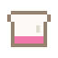

Catch the falling food with the Smulguh's bowl for a minute, and stay away from Mika fat.
Vang een minuut lang het vallende eten met de schaal van de Smulguh, en blijf weg van Mika-vet.
The Vadsig Food FestivalHet Vadsig eetfestijn
The Vadsig eetfestijn is a rare, huge guh food festival (96 blocks wide) in the Guhmension. In its striped tent the Smulguh lends you her big smulschaal: for one minute food rains down from the sky and out of the chutes, and you walk around the arena freely to catch it. Kaasknabbel 1, cupcake 2, macaron and milkshake 3, guh cake 5, and a golden smulknabbel 10 plus double points for a while. Five in a row is combo x2, ten is x3. Watch out for the dark Mika-vet: it costs 5 points and your combo, and makes you slow! Afterwards you get smulmunten, hear your personal record in the chat, and the bowl goes back. The top 3 of the whole world floats above the Smulguh's head. Spend smulmunten on the smul outfit (bib, baker's hat, pink apron), which is only sold here.
Het Vadsig eetfestijn is een zeldzaam, reusachtig guh-smulfeest (96 blokken breed) in de Guhmensie. In de gestreepte tent leent de Smulguh je haar grote smulschaal: één minuut lang regent het eten uit de lucht en uit de trechters, en jij loopt vrij door de arena om het te vangen. Kaasknabbel 1, cupcake 2, macaron en milkshake 3, guhtaart 5, en een gouden smulknabbel 10 plus een tijdje dubbele punten. Vijf op rij is combo x2, tien op rij x3. Pas op voor het zwarte Mika-vet: dat kost 5 punten en je combo, en je wordt er traag van! Na afloop krijg je smulmunten, hoor je in de chat je eigen record, en gaat de schaal terug. De top 3 van de hele wereld zweeft boven het hoofd van de Smulguh. Met smulmunten koop je het smulpakje (slabbetje, bakkersmuts, roze schort), dat je alleen hier kunt kopen. VAHOEG!



Prizes: clothesPrijzen: kleding
 Smulslabbetje 5 smulmunten
Smulslabbetje 5 smulmunten- Vadsige bakkersmuts 7 smulmunten
 Roze smulschort 9 smulmunten
Roze smulschort 9 smulmunten
Highscores in the GuhdexHighscores in de Guhdex
- Makkelijk
- Medium
- Lastig